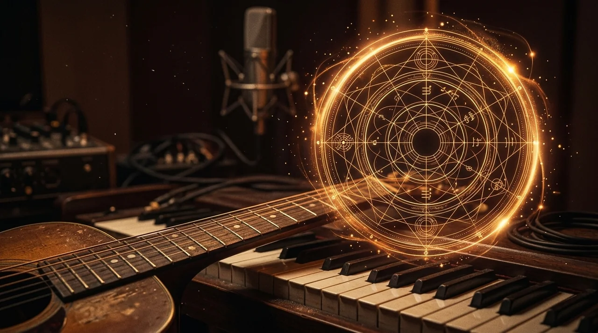

WALAMORT ACADEMY · TONALIDADES E HARMONIA
Círculo de quintas interativo

Descubra como as tonalidades se relacionam, compare suas armaduras e ouça os acordes de uma escala. O nome maior indica a tonalidade maior; o menor, sua relativa menor. Avançar por quintas relaciona armaduras vizinhas; na região enarmônica, nomes equivalentes mantêm o círculo legível.
Use o seletor para as alternativas enarmônicas: Si/Dó♭, Fá♯/Sol♭ e Dó♯/Ré♭ têm a mesma altura em instrumentos de temperamento igual, mas são escritas com armaduras diferentes.
Escolha um acorde diatônico
Sete tríades diatônicas
| Grau | Acorde | Notas |
|---|
Leve a tonalidade à prática
Explorar esta escala no violão ou baixo · em inglês →
Praticar leitura com esta armadura · em inglês →
Explorar inversões no laboratório →
Os links de leitura e inversões aparecem para as tonalidades aceitas por essas ferramentas.